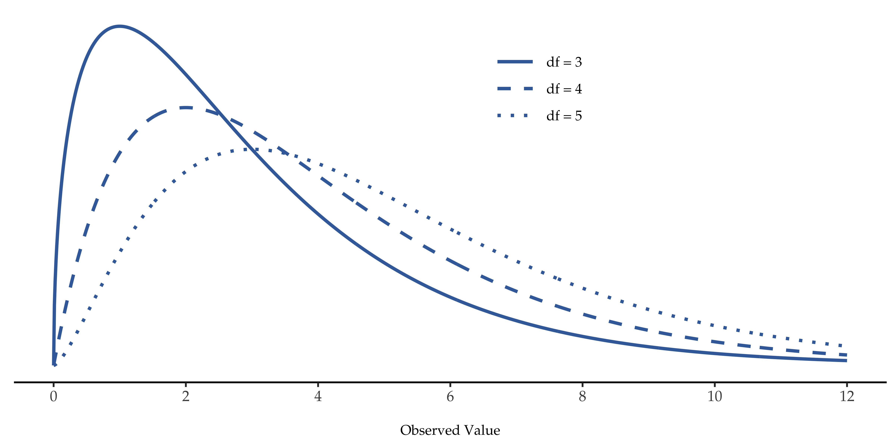
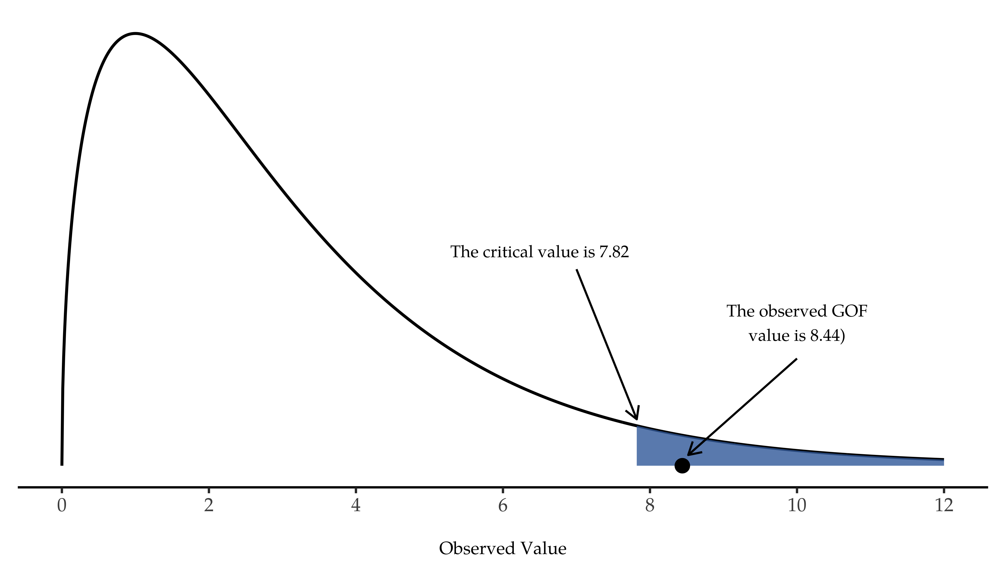
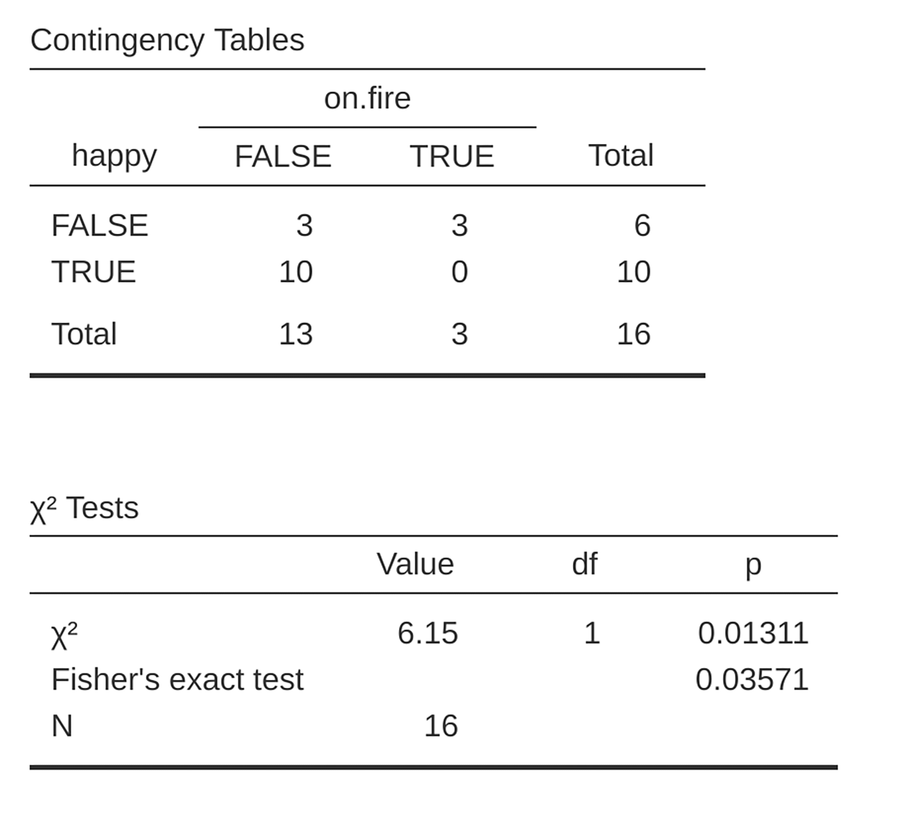
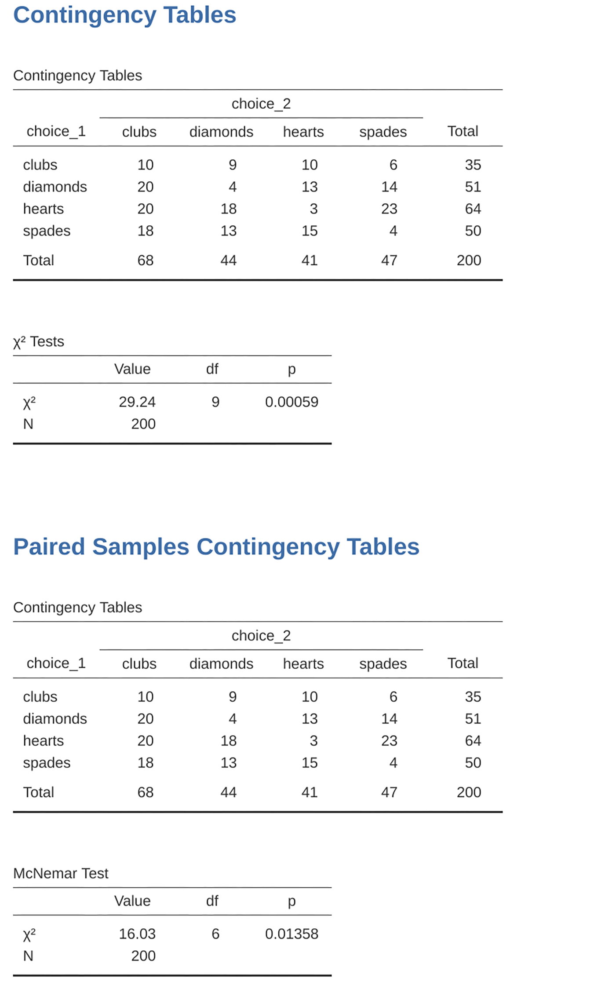

| clubs | diamonds | hearts | spades |
|---|---|---|---|
| 35 | 51 | 64 | 50 |
10 Categorical data analysis
Now that we’ve covered the basic theory behind hypothesis testing it’s time to start looking at specific tests that are commonly used in psychology. So where should we start? Not every textbook agrees on where to start, but I’m going to start with \(\chi^2\) tests (this chapter, pronounced “chi-square”1 and \(t\)-tests in Chapter 11). Both of these tools are very frequently used in scientific practice, and whilst they’re not as powerful as “regression” and “analysis of variance” which we cover in later chapters, they’re much easier to understand.
The term “categorical data” is just another name for “nominal scale data”. It’s nothing that we haven’t already discussed, it’s just that in the context of data analysis people tend to use the term “categorical data” rather than “nominal scale data”. I don’t know why. In any case, categorical data analysis refers to a collection of tools that you can use when your data are nominal scale. However, there are a lot of different tools that can be used for categorical data analysis, and this chapter covers only a few of the more common ones.
10.1 The \(\chi^2\) (chi-square) goodness-of-fit test
The \(\chi^2\) goodness-of-fit test is one of the oldest hypothesis tests around. It was invented by Karl Pearson around the turn of the century (Pearson, 1900), with some corrections made later by Sir Ronald Fisher (Fisher, 1922). It tests whether an observed frequency distribution of a nominal variable matches an expected frequency distribution. For example, suppose a group of patients has been undergoing an experimental treatment and have had their health assessed to see whether their condition has improved, stayed the same or worsened. A goodness-of-fit test could be used to determine whether the numbers in each category – improved, no change, worsened – match the numbers that would be expected given the standard treatment option. Let’s think about this some more, with some psychology.
10.1.1 The cards data
Over the years there have been many studies showing that humans find it difficult to simulate randomness. Try as we might to “act” random, we think in terms of patterns and structure and so, when asked to “do something at random”, what people actually do is anything but random. As a consequence, the study of human randomness (or non-randomness, as the case may be) opens up a lot of deep psychological questions about how we think about the world.
With this in mind, let’s consider a very simple study. Suppose I asked people to imagine a shuffled deck of cards, and mentally pick one card from this imaginary deck “at random”. After they’ve chosen one card I ask them to mentally select a second one. For both choices what we’re going to look at is the suit (hearts, clubs, spades or diamonds) that people chose. After asking, say, \(N = 200\) people to do this, I’d like to look at the data and figure out whether or not the cards that people pretended to select were really random. The data are contained in the randomness.csv file in which, when you open it up in jamovi and take a look at the spreadsheet view, you will see three variables. These are: an id variable that assigns a unique identifier to each participant, and the two variables choice_1 and choice_2 that indicate the card suits that people chose.
For the moment, let’s just focus on the first choice that people made. We’ll use the Frequency tables option under ‘Exploration’ – ‘Descriptives’ to count the number of times that we observed people choosing each suit. This is what we get: (Table 10.1).
That little frequency table is quite helpful. Looking at it, there’s a bit of a hint that people might be more likely to select hearts than clubs, but it’s not completely obvious just from looking at it whether that’s really true, or if this is just due to chance. So we’ll probably have to do some kind of statistical analysis to find out, which is what I’m going to talk about in the next section.
Excellent. From this point on, we’ll treat this table as the data that we’re looking to analyse. However, since I’m going to have to talk about this data in mathematical terms (sorry!) it might be a good idea to be clear about what the notation is. In mathematical notation, we shorten the human-readable word “observed” to the letter \(O\), and we use subscripts to denote the position of the observation. So the second observation in our table is written as \(O_2\) in maths. The relationship between the English descriptions and the mathematical symbols are illustrated in Table 10.2.
| label | index, i | math. symbol | the value |
|---|---|---|---|
| clubs, \( \clubsuit \) | 1 | \( O_1 \) | 35 |
| diamonds, \( \diamondsuit \) | 2 | \( O_2 \) | 51 |
| hearts, \( \heartsuit \) | 3 | \( O_3 \) | 64 |
| spades, \( \spadesuit \) | 4 | \( O_4 \) | 50 |
Hopefully that’s pretty clear. It’s also worth noting that mathematicians prefer to talk about general rather than specific things, so you’ll also see the notation \(O_i\), which refers to the number of observations that fall within the i-th category (where i could be 1, 2, 3 or 4). Finally, if we want to refer to the set of all observed frequencies, statisticians group all observed values into a vector,2 which I’ll refer to as \(O\).
\[O = (O_1, O_2, O_3, O_4)\] Again, this is nothing new or interesting. It’s just notation. If I say that \(O = (35, 51, 64, 50)\) all I’m doing is describing the table of observed frequencies (i.e., observed), but I’m referring to it using mathematical notation.
10.1.2 The null hypothesis and the alternative hypothesis
As the last section indicated, our research hypothesis is that “people don’t choose cards randomly”. What we’re going to want to do now is translate this into some statistical hypotheses and then construct a statistical test of those hypotheses. The test that I’m going to describe to you is Pearson’s \(\chi^2\) (chi-square) goodness-of-fit test, and as is so often the case we have to begin by carefully constructing our null hypothesis. In this case, it’s pretty easy. First, let’s state the null hypothesis in words: \[H_0: \text{ All four suits are chosen with equal probability}\] Now, let’s say this in a mathematical way. To do this, let’s use the notation \(P_j\) to refer to the true probability that the j-th suit is chosen. If the null hypothesis is true, then each of the four suits has a 25% chance of being selected. In other words, our null hypothesis claims that \(P_1 = .25\), \(P_2 = .25\), \(P_3 = .25\) and finally that \(P_4 = .25\) . However, in the same way that we can group our observed frequencies into a vector O that summarises the entire data set, we can use P to refer to the probabilities that correspond to our null hypothesis. So if I let the vector \(P = (P_1, P_2, P_3, P_4)\) refer to the collection of probabilities that describe our null hypothesis, then we have:
\[H_0: P =(.25, .25, .25, .25)\]
In this instance, our null hypothesis corresponds to a vector of probabilities \(P\) in which all of the probabilities are equal to one another. But this doesn’t have to be the case: if the experimental task was for people to imagine they were drawing from a deck that had twice as many clubs as any other suit, then the null hypothesis would be \(P = (.4, .2, .2, .2)\). As long as the probabilities are all positive numbers, and they all sum to 1, then it’s a perfectly legitimate choice for the null hypothesis. However, the typical use of the goodness-of-fit test is with a null hypothesis that all the categories are equally likely, so we’ll stick to that for our example.
What about our alternative hypothesis, \(H_1\)? All we’re really interested in is demonstrating that the probabilities involved aren’t all identical (that is, people’s choices weren’t completely random). As a consequence, the “human friendly” versions of our hypotheses look like this:
\[H_0: \text{ All four suits are chosen with equal probability}\] \[H_1: \text{ At least one of the suit-choice probabilities isn’t 0.25}\]
…and the “mathematician friendly” version is:
\[H_0: P= (.25, .25, .25, .25)\] \[H_1: P \neq (.25, .25, .25, .25)\]
10.1.3 The “goodness-of-fit” test statistic
At this point, we have our observed frequencies O and a collection of probabilities P corresponding to the null hypothesis that we want to test. What we now want to do is construct a test of the null hypothesis. As always, if we want to test \(H_0\) against \(H_1\), we’re going to need a test statistic. The basic trick that a goodness-of-fit test uses is to construct a test statistic that measures how “close” the data are to the null hypothesis. If the data don’t resemble what you’d “expect” to see if the null hypothesis were true, then it probably isn’t true. Okay, if the null hypothesis were true, what would we expect to see? Or, to use the correct terminology, what are the expected frequencies. There are \(N = 200\) observations, and (if the null is true) the probability of any one of them choosing a heart is \(P_3 = .25\), so I guess we’re expecting \(200 \times .25 = 50\) hearts, right? Or, more specifically, if we let \(E_i\) refer to “the number of category \(i\) responses that we’re expecting if the null is true”, then:
\[E_i=N \times P_i\]
This is pretty easy to calculate. If there are 200 observations that can fall into four categories, and we think that all four categories are equally likely, then on average we’d expect to see 50 observations in each category, right?
Now, how do we translate this into a test statistic? Clearly, what we want to do is compare the expected number of observations in each category (\(E_i\)) with the observed number of observations in that category (\(O_i\)). And on the basis of this comparison we ought to be able to come up with a good test statistic. To start with, let’s calculate the difference between what the null hypothesis expected us to find and what we actually did find. That is, we calculate the “observed minus expected” difference score, \(O_i - E_i\). This is illustrated in Table 10.3.
So, based on our calculations, it’s clear that people chose more hearts and fewer clubs than the null hypothesis predicted. However, a moment’s thought suggests that these raw differences aren’t quite what we’re looking for. Intuitively, it feels like it’s just as bad when the null hypothesis predicts too few observations (which is what happened with hearts) as it is when it predicts too many (which is what happened with clubs). So it’s a bit weird that we have a negative number for clubs and a positive number for hearts. One easy way to fix this is to square everything, so that we now calculate the squared differences, \((E_i - O_i)^2\) . As before, we can do this by hand (Table 10.4).
| \( \clubsuit \) | \( \diamondsuit \) | \( \heartsuit \) | \( \spadesuit \) | |
|---|---|---|---|---|
| expected frequency \( E_i\) | 50 | 50 | 50 | 50 |
| observed frequency \( O_i\) | 35 | 51 | 64 | 50 |
| difference score \( O_i-E_i\) | -15 | 1 | 14 | 0 |
| \( \clubsuit \) | \( \diamondsuit \) | \( \heartsuit \) | \( \spadesuit \) |
|---|---|---|---|
| 225 | 1 | 196 | 0 |
Now we’re making progress. What we’ve got now is a collection of numbers that are big whenever the null hypothesis makes a bad prediction (clubs and hearts), but are small whenever it makes a good one (diamonds and spades). Next, for some technical reasons that I’ll explain in a moment, let’s also divide all these numbers by the expected frequency \(E_i\), so we’re actually calculating \(\frac{(E_i-O_i)^2}{E_i}\) . Since \(E_i = 50\) for all categories in our example, it’s not a very interesting calculation, but let’s do it anyway (Table 10.5).
| \( \clubsuit \) | \( \diamondsuit \) | \( \heartsuit \) | \( \spadesuit \) |
|---|---|---|---|
| 4.50 | 0.02 | 3.92 | 0.00 |
In effect, what we’ve got here are four different “error” scores, each one telling us how big a “mistake” the null hypothesis made when we tried to use it to predict our observed frequencies. So, in order to convert this into a useful test statistic, one thing we could do is just add these numbers up. The result is called the goodness-of-fit statistic, conventionally referred to either as \(\chi^2\) (chi-square) or GOF. We can calculate it as:
\[\sum( (observed - expected)^2 / expected )\]
This gives us a value of 8.44.
[Additional technical detail3]
As we’ve seen from our calculations, in our cards data set we’ve got a value of \(\chi^2\) = 8.44. So now the question becomes is this a big enough value to reject the null?
10.1.4 The sampling distribution of the GOF statistic
To determine whether or not a particular value of \(\chi^2\) is large enough to justify rejecting the null hypothesis, we’re going to need to figure out what the sampling distribution for \(\chi^2\) would be if the null hypothesis were true. So that’s what I’m going to do in this section. I’ll show you in a fair amount of detail how this sampling distribution is constructed, and then, in the next section, use it to build up a hypothesis test. If you want to cut to the chase and are willing to take it on faith that the sampling distribution is a \(\chi^2\) (chi-square) distribution with \(k - 1\) degrees of freedom, you can skip the rest of this section. However, if you want to understand why the goodness-of-fit test works the way it does, read on.
Okay, let’s suppose that the null hypothesis is actually true. If so, then the true probability that an observation falls in the \(i\)-th category is \(P_i\) . After all, that’s pretty much the definition of our null hypothesis. Let’s think about what this actually means. This is kind of like saying that “nature” makes the decision about whether or not the observation ends up in category \(i\) by flipping a weighted coin (i.e., one where the probability of getting a head is \(P_j\)). And therefore we can think of our observed frequency \(O_i\) by imagining that nature flipped \(N\) of these coins (one for each observation in the data set), and exactly \(O_i\) of them came up heads. Obviously, this is a pretty weird way to think about the experiment. But what it does (I hope) is remind you that we’ve actually seen this scenario before. It’s exactly the same set up that gave rise to Section 7.4 in Chapter 7. In other words, if the null hypothesis is true, then it follows that our observed frequencies were generated by sampling from a binomial distribution:
\[O_i \sim Binomial(P_i,N) \]
Now, if you remember from our discussion of Section 8.3.3 the binomial distribution starts to look pretty much identical to the normal distribution, especially when \(N\) is large and when \(P_i\) isn’t too close to 0 or 1. In other words as long as \(N^P_i\) is large enough. Or, to put it another way, when the expected frequency \(E_i\) is large enough then the theoretical distribution of \(O_i\) is approximately normal. Better yet, if \(O_i\) is normally distributed, then so is \((O_i-E_i)/\sqrt{(E_i)}\) . Since \(E_i\) is a fixed value, subtracting off \(E_i\) and dividing by \(\sqrt{(E_i)}\) changes the mean and standard deviation of the normal distribution but that’s all it does. Okay, so now let’s have a look at what our goodness-of-fit statistic actually is. What we’re doing is taking a bunch of things that are normally-distributed, squaring them, and adding them up. Wait. We’ve seen that before too! As we discussed in the section on Section 7.6, when you take a bunch of things that have a standard normal distribution (i.e., mean 0 and standard deviation 1), square them and then add them up, the resulting quantity has a chi-square distribution. So now we know that the null hypothesis predicts that the sampling distribution of the goodness-of-fit statistic is a chi-square distribution. Cool.
There’s one last detail to talk about, namely the degrees of freedom. If you remember back to Section 7.6, I said that if the number of things you’re adding up is \(k\), then the degrees of freedom for the resulting chi-square distribution is \(k\). Yet, what I said at the start of this section is that the actual degrees of freedom for the chi-square goodness-of-fit test is \(k - 1\). What’s up with that? The answer here is that what we’re supposed to be looking at is the number of genuinely independent things that are getting added together. And, as I’ll go on to talk about in the next section, even though there are \(k\) things that we’re adding only \(k - 1\) of them are truly independent, and so the degrees of freedom is actually only \(k - 1\). That’s the topic of the next section.4
10.1.5 Degrees of freedom

When I introduced the chi-square distribution in Section 7.6, I was a bit vague about what “degrees of freedom” actually means. Obviously, it matters. Looking at Figure 10.1, you can see that if we change the degrees of freedom then the chi-square distribution changes shape quite substantially. But what exactly is it? Again, when I introduced the distribution and explained its relationship to the normal distribution, I did offer an answer: it’s the number of “normally distributed variables” that I’m squaring and adding together. But, for most people, that’s kind of abstract and not entirely helpful. What we really need to do is try to understand degrees of freedom in terms of our data. So here goes.
The basic idea behind degrees of freedom is quite simple. You calculate it by counting up the number of distinct “quantities” that are used to describe your data and then subtracting off all of the “constraints” that those data must satisfy.5 This is a bit vague, so let’s use our cards data as a concrete example. We describe our data using four numbers, \(O_1, O_2, O_3\) and \(O_4\) corresponding to the observed frequencies of the four different categories (hearts, clubs, diamonds, spades). These four numbers are the random outcomes of our experiment. But my experiment actually has a fixed constraint built into it: the sample size \(N\).6 That is, if we know.
How many people chose hearts, how many chose diamonds and how many chose clubs, then we’d be able to figure out exactly how many chose spades. In other words, although our data are described using four numbers, they only actually correspond to \(4 - 1 = 3\) degrees of freedom. A slightly different way of thinking about it is to notice that there are four probabilities that we’re interested in (again, corresponding to the four different categories), but these probabilities must sum to one, which imposes a constraint. Therefore the degrees of freedom is \(4 - 1 = 3\). Regardless of whether you want to think about it in terms of the observed frequencies or in terms of the probabilities, the answer is the same. In general, when running the \(\chi^2\)(chi-square) goodness-of-fit test for an experiment involving \(k\) groups, then the degrees of freedom will be \(k - 1\).
10.1.6 Testing the null hypothesis
The final step in the process of constructing our hypothesis test is to figure out what the rejection region is. That is, what values of \(\chi^2\) would lead us to reject the null hypothesis. As we saw earlier, large values of \(\chi^2\) imply that the null hypothesis has done a poor job of predicting the data from our experiment, whereas small values of \(\chi^2\) imply that it’s actually done pretty well. Therefore, a pretty sensible strategy would be to say there is some critical value such that if \(\chi^2\) is bigger than the critical value we reject the null, but if \(\chi^2\) is smaller than this value we retain the null. In other words, to use the language we introduced in Chapter 9 the chi-square goodness-of-fit test is always a one-sided test. Right, so all we have to do is figure out what this critical value is. And it’s pretty straightforward. If we want our test to have significance level of \(\alpha = .05\) (that is, we are willing to tolerate a type I error rate of \(5%\)), then we have to choose our critical value so that there is only a 5% chance that \(\chi^2\) could get to be that big if the null hypothesis is true. This is illustrated in Figure 10.2.

Ah but, I hear you ask, how do I find the critical value of a chi-square distribution with \(k-1\) degrees of freedom? Many many years ago when I first took a psychology statistics class we used to look up these critical values in a book of critical value tables, like the one in Table 10.6. Looking at this Figure, we can see that the critical value for a \(\chi^2\) distribution with 3 degrees of freedom and \(p=0.05\) is 7.815.
| Probability | ||||||||
| Degrees of freedom | 0.95 | 0.9 | 0.7 | 0.5 | 0.1 | 0.05 | 0.01 | 0.001 |
|---|---|---|---|---|---|---|---|---|
| 1 | 0.004 | 0.016 | 0.148 | 0.455 | 2.706 | 3.841 | 6.635 | 10.828 |
| 2 | 0.103 | 0.211 | 0.713 | 1.386 | 4.605 | 5.991 | 9.210 | 13.816 |
| 3 | 0.352 | 0.584 | 1.424 | 2.366 | 6.251 | 7.815 | 11.345 | 16.266 |
| 4 | 0.711 | 1.064 | 2.195 | 3.357 | 7.779 | 9.488 | 13.277 | 18.467 |
| 5 | 1.145 | 1.610 | 3.000 | 4.351 | 9.236 | 11.070 | 15.086 | 20.515 |
| 6 | 1.635 | 2.204 | 3.828 | 5.348 | 10.645 | 12.592 | 16.812 | 22.458 |
| 7 | 2.167 | 2.833 | 4.671 | 6.346 | 12.017 | 14.067 | 18.475 | 24.322 |
| 8 | 2.733 | 3.490 | 5.527 | 7.344 | 13.362 | 15.507 | 20.090 | 26.124 |
| 9 | 3.325 | 4.168 | 6.393 | 8.343 | 14.684 | 16.919 | 21.666 | 27.877 |
| 10 | 3.940 | 4.865 | 7.267 | 9.342 | 15.987 | 18.307 | 23.209 | 29.588 |
| Non-significant | Significant | |||||||
So, if our calculated \(\chi^2\) statistic is bigger than the critical value of \(7.815\), then we can reject the null hypothesis (remember that the null hypothesis, \(H_0\), is that all four suits are chosen with equal probability). Since we actually already calculated that before (i.e., \(\chi^2\) = 8.44) we can reject the null hypothesis. And that’s it, basically. You now know “Pearson’s \(\chi^2\) test for the goodness-of-fit”. Lucky you.
10.1.7 Doing the test in jamovi
Not surprisingly, jamovi provides an analysis that will do these calculations for you. Let’s use the Randomness.omv file. From the main ‘Analyses’ toolbar select ‘Frequencies’ – ‘One Sample Proportion Tests’ – ‘\(N\) Outcomes’. Then in the analysis window that appears move the variable you want to analyse (choice 1 across into the ‘Variable’ box. Also, click on the ‘Expected counts’ check box so that these are shown on the results table. When you have done all this, you should see the analysis results in jamovi as in Figure 10.3. No surprise then that jamovi provides the same expected counts and statistics that we calculated by hand above, with a \(\chi^2\) value of \((8.44\) with \(3\) df and \(p=0.038\). Note that we don’t need to look up a critical \(p\)-value threshold value any more, as jamovi gives us the actual \(p\)-value of the calculated \(\chi^2\) for 3 \(df\).
10.1.8 Specifying a different null hypothesis
At this point you might be wondering what to do if you want to run a goodness-of-fit test but your null hypothesis is not that all categories are equally likely. For instance, let’s suppose that someone had made the theoretical prediction that people should choose red cards \(60\%\) of the time, and black cards \(40\%\) of the time (I’ve no idea why you’d predict that), but had no other preferences. If that were the case, the null hypothesis would be to expect \(30\%\) of the choices to be hearts, \(30\%\) to be diamonds, \(20\%\) to be spades and \(20\%\) to be clubs. In other words we would expect hearts and diamonds to appear 1.5 times more often than spades and clubs (the ratio \(30\%\) : \(20\%\) is the same as 1.5 : 1). The expected counts are now shown in Table 10.7.
| \( \clubsuit \) | \( \diamondsuit \) | \( \heartsuit \) | \( \spadesuit \) | |
|---|---|---|---|---|
| expected frequency \( E_i\) | 40 | 60 | 60 | 40 |
This seems like a silly theory to me, and it’s pretty easy to test this explicitly specified null hypothesis with the data in our jamovi analysis. In the analysis window (labelled ‘Proportion Test (N Outcomes)’ in Figure 10.3 you can expand the options for ‘Expected Proportions’. When you do this, there are options for entering different ratio values for the variable you have selected, in our case this is choice 1. Change the ratio to reflect the new null hypothesis, as in Figure 10.4, and check the results.
You can see that the \(\chi^2\) statistic is 4.74, 3 df, \(p = 0.192\). Now, the results of our updated hypotheses and the expected frequencies are different from what they were last time. As a consequence our \(\chi^2\) test statistic is different, and our \(p\)-value is different too. Annoyingly, the \(p\)-value is \(.192\), so we can’t reject the null hypothesis (look back at Section 9.5 to remind yourself why). Sadly, despite the fact that the null hypothesis corresponds to a very silly theory, these data don’t provide enough evidence against it.
10.1.9 How to report the results of the test
So now you know how the test works, and you know how to do the test using a wonderful jamovi flavoured magic computing box. The next thing you need to know is how to write up the results. After all, there’s no point in designing and running an experiment and then analysing the data if you don’t tell anyone about it! So let’s now talk about what you need to do when reporting your analysis. Let’s stick with our card-suits example. If I wanted to write this result up for a paper or something, then the conventional way to report this would be to write something like this:
Of the 200 participants in the experiment, 64 selected hearts for their first choice, 51 selected diamonds, 50 selected spades, and 35 selected clubs. A chi-square goodness-of-fit test was conducted to test whether the choice probabilities were identical for all four suits. The results were significant (\(\chi^2(3) = 8.44, p< .05)\), suggesting that people did not select suits purely at random.
This is pretty straightforward and hopefully it seems pretty unremarkable. That said, there’s a few things that you should note about this description:
- The statistical test is preceded by the descriptive statistics. That is, I told the reader something about what the data look like before going on to do the test. In general, this is good practice. Always remember that your reader doesn’t know your data anywhere near as well as you do. So, unless you describe it to them properly, the statistical tests won’t make any sense to them and they’ll get frustrated and cry.
- The description tells you what the null hypothesis being tested is. To be honest, writers don’t always do this but it’s often a good idea in those situations where some ambiguity exists, or when you can’t rely on your readership being intimately familiar with the statistical tools that you’re using. Quite often the reader might not know (or remember) all the details of the test that your using, so it’s a kind of politeness to “remind” them! As far as the goodness-of-fit test goes, you can usually rely on a scientific audience knowing how it works (since it’s covered in most intro stats classes). However, it’s still a good idea to be explicit about stating the null hypothesis (briefly!) because the null hypothesis can be different depending on what you’re using the test for. For instance, in the cards example my null hypothesis was that all the four suit probabilities were identical (i.e., \(P_1 = P_2 = P_3 = P_4 = 0.25\)), but there’s nothing special about that hypothesis. I could just as easily have tested the null hypothesis that \(P_1 = 0.7\) and \(P_2 = P_3 = P_4 = 0.1\) using a goodness-of-fit test. So it’s helpful to the reader if you explain to them what your null hypothesis was. Also, notice that I described the null hypothesis in words, not in maths. That’s perfectly acceptable. You can describe it in maths if you like, but since most readers find words easier to read than symbols, most writers tend to describe the null using words if they can.
- A “stat block” is included. When reporting the results of the test itself, I didn’t just say that the result was significant, I included a “stat block” (i.e., the dense mathematical looking part in the parentheses) which reports all the “key” statistical information. For the chi-square goodness-of-fit test, the information that gets reported is the test statistic (that the goodness-of-fit statistic was 8.44), the information about the distribution used in the test (\(\chi^2\) with 3 degrees of freedom which is usually shortened to \(\chi^2\)(3)), and then the information about whether the result was significant (in this case \(p< .05\)). The particular information that needs to go into the stat block is different for every test, and so each time I introduce a new test I’ll show you what the stat block should look like.7 However the general principle is that you should always provide enough information so that the reader could check the test results themselves if they really wanted to.
- The results are interpreted. In addition to indicating that the result was significant, I provided an interpretation of the result (i.e., that people didn’t choose randomly). This is also a kindness to the reader, because it tells them something about what they should believe about what’s going on in your data. If you don’t include something like this, it’s really hard for your reader to understand what’s going on.8
As with everything else, your overriding concern should be that you explain things to your reader. Always remember that the point of reporting your results is to communicate to another human being. I cannot tell you just how many times I’ve seen the results section of a report or a thesis or even a scientific article that is just gibberish, because the writer has focused solely on making sure they’ve included all the numbers and forgotten to actually communicate with the human reader.
Satan delights equally in statistics and in quoting scripture9
– H.G. Wells
10.2 The \(\chi^2\) test of independence (or association)
GUARDBOT 1: Halt!
GUARDBOT 2: Be you robot or human?
LEELA: Robot…we be.
FRY: Uh, yup! Just two robots out roboting it up! Eh?
GUARDBOT 1: Administer the test.
GUARDBOT 2: Which of the following would you most prefer? A: A puppy, B: A pretty flower from your sweetie, or C: A large properly-formatted data file?
GUARDBOT 1: Choose!
– Futurama, Fear of a Bot Planet
The other day I was watching an animated documentary examining the quaint customs of the natives of the planet Chapek 9. Apparently, in order to gain access to their capital city a visitor must prove that they’re a robot, not a human. In order to determine whether or not a visitor is human, the natives ask whether the visitor prefers puppies, flowers, or large, properly formatted data files. “Pretty clever,” I thought to myself “but what if humans and robots have the same preferences? That probably wouldn’t be a very good test then, would it?” As it happens, I got my hands on the testing data that the civil authorities of Chapek 9 used to check this. It turns out that what they did was very simple. They found a bunch of robots and a bunch of humans and asked them what they preferred. I saved their data in a file called chapek9.omv, which we can now load into jamovi. As well as the ID variable that identifies individual people, there are two nominal text variables, species and choice. In total there are 180 entries in the data set, one for each person (counting both robots and humans as “people”) who was asked to make a choice. Specifically, there are 93 humans and 87 robots, and overwhelmingly the preferred choice is the data file. You can check this yourself by asking jamovi for Frequency Tables, under the ‘Exploration’ – ‘Descriptives’ button. However, this summary does not address the question we’re interested in. To do that, we need a more detailed description of the data. What we want to do is look at the choices broken down by species. That is, we need to cross-tabulate the data (see Section 6.1). In jamovi we do this using the ‘Frequencies’ – ‘Contingency Tables’ – ‘Independent Samples’ analysis, and we should get a table something like Table 10.8.
| Robot | Human | Total | |
|---|---|---|---|
| Puppy | 13 | 15 | 28 |
| Flower | 30 | 13 | 43 |
| Data | 44 | 65 | 109 |
| Total | 87 | 93 | 180 |
From this, it’s quite clear that the vast majority of the humans chose the data file, whereas the robots tended to be a lot more even in their preferences. Leaving aside the question of why the humans might be more likely to choose the data file for the moment (which does seem quite odd, admittedly), our first order of business is to determine if the discrepancy between human choices and robot choices in the data set is statistically significant.
10.2.1 Constructing our hypothesis test
How do we analyse this data? Specifically, since my research hypothesis is that “humans and robots answer the question in different ways”, how can I construct a test of the null hypothesis that “humans and robots answer the question the same way”? As before, we begin by establishing some notation to describe the data (Table 10.9).
| Robot | Human | Total | |
|---|---|---|---|
| Puppy | \(O_{11}\) | \(O_{12}\) | \(R_{1}\) |
| Flower | \(O_{21}\) | \(O_{22}\) | \(R_{2}\) |
| Data | \(O_{31}\) | \(O_{32}\) | \(R_{3}\) |
| Total | \(C_{1}\) | \(C_{2}\) | \( N \) |
In this notation we say that \(O_{ij}\) is a count (observed frequency) of the number of respondents that are of species \(j\) (robots or human) who gave answer \(i\) (puppy, flower or data) when asked to make a choice. The total number of observations is written \(N\), as usual. Finally, I’ve used \(R_i\) to denote the row totals (e.g., \(R_1\) is the total number of people who chose the flower), and \(C_j\) to denote the column totals (e.g., \(C_1\) is the total number of robots).10
So now let’s think about what the null hypothesis says. If robots and humans are responding in the same way to the question, it means that the probability that “a robot says puppy” is the same as the probability that “a human says puppy”, and so on for the other two possibilities. So, if we use \(P_{ij}\) to denote “the probability that a member of species \(j\) gives response \(i\)” then our null hypothesis is that:
\[ \begin{aligned} H_0 &: \text{All of the following are true:} \\ &P_{11} = P_{12}\text{ (same probability of saying “puppy”),} \\ &P_{21} = P_{22}\text{ (same probability of saying “flower”), and} \\ &P_{31} = P_{32}\text{ (same probability of saying “data”).} \end{aligned} \]
And actually, since the null hypothesis is claiming that the true choice probabilities don’t depend on the species of the person making the choice, we can let Pi refer to this probability, e.g., \(P_1\) is the true probability of choosing the puppy.
Next, in much the same way that we did with the goodness-of-fit test, what we need to do is calculate the expected frequencies. That is, for each of the observed counts \(O_{ij}\) we need to figure out what the null hypothesis would tell us to expect. Let’s denote this expected frequency by \(E_{ij}\). This time, it’s a little bit trickier. If there are a total of \(C_j\) people that belong to species \(j\), and the true probability of anyone (regardless of species) choosing option \(i\) is \(P_i\), then the expected frequency is just:
\[E_{ij}=C_j \times P_i\]
Now, this is all very well and good, but we have a problem. Unlike the situation we had with the goodness-of-fit test, the null hypothesis doesn’t actually specify a particular value for Pi .
It’s something we have to estimate (see Chapter 8) from the data! Fortunately, this is pretty easy to do. If 28 out of 180 people selected the flowers, then a natural estimate for the probability of choosing flowers is \(\frac{28}{180}\), which is approximately \(.16\). If we phrase this in mathematical terms, what we’re saying is that our estimate for the probability of choosing option \(i\) is just the row total divided by the total sample size:
\[\hat{P}_{i}= \frac{R_i}{N}\]
Therefore, our expected frequency can be written as the product (i.e. multiplication) of the row total and the column total, divided by the total number of observations:
\[{E}_{ij}= \frac{R_i \times C_j}{N}\] [Additional technical detail11]
As before, large values of \(X^2\) indicate that the null hypothesis provides a poor description of the data, whereas small values of \(X^2\) suggest that it does a good job of accounting for the data. Therefore, just like last time, we want to reject the null hypothesis if \(X^2\) is too large.
Not surprisingly, this statistic is \(\chi^2\) distributed. All we need to do is figure out how many degrees of freedom are involved, which actually isn’t too hard. As I mentioned before, you can (usually) think of the degrees of freedom as being equal to the number of data points that you’re analysing, minus the number of constraints. A contingency table with r rows and c columns contains a total of \(r^{c}\) observed frequencies, so that’s the total number of observations. What about the constraints? Here, it’s slightly trickier. The answer is always the same:
\[df=(r-1)(c-1)\]
But the explanation for why the degrees of freedom takes this value is different depending on the experimental design. For the sake of argument, let’s suppose that we had honestly intended to survey exactly 87 robots and 93 humans (column totals fixed by the experimenter), but left the row totals free to vary (row totals are random variables). Let’s think about the constraints that apply here. Well, since we deliberately fixed the column totals by Act of Experimenter, we have \(c\) constraints right there. But, there’s actually more to it than that.
Remember how our null hypothesis had some free parameters (i.e., we had to estimate the Pi values)? Those matter too. I won’t explain why in this book, but every free parameter in the null hypothesis is rather like an additional constraint. So, how many of those are there? Well, since these probabilities have to sum to 1, there’s only \(r - 1\) of these.
So our total degrees of freedom is:
\[ \begin{split} df & = \text{(number of observations) - (number of constraints)} \\\\ & = (r \times c) - (c + (r - 1)) \\\\ & = rc - c - r + 1 \\\\ & = (r - 1)(c - 1) \end{split} \]
Alternatively, suppose that the only thing that the experimenter fixed was the total sample size N. That is, we quizzed the first 180 people that we saw and it just turned out that 87 were robots and 93 were humans. This time around our reasoning would be slightly different, but would still lead us to the same answer. Our null hypothesis still has \(r - 1\) free parameters corresponding to the choice probabilities, but it now also has \(c - 1\) free parameters corresponding to the species probabilities, because we’d also have to estimate the probability that a randomly sampled person turns out to be a robot.12
Finally, since we did actually fix the total number of observations N, that’s one more constraint. So, now we have \(rc\) observations, and \((c-1)+(r-1)+1\) constraints. And that gives:
\[ \begin{split} df & = \text{(number of observations) - (number of constraints)} \\\\ & = (r \times c) - ((c-1) + (r - 1)+1) \\\\ & = (r - 1)(c - 1) \end{split} \]
Amazing.
10.2.2 Doing the test in jamovi
Okay, now that we know how the test works let’s have a look at how it’s done in jamovi. As tempting as it is to lead you through the tedious calculations so that you’re forced to learn it the long way, I figure there’s no point. I already showed you how to do it the long way for the goodness-of-fit test in the last section, and since the test of independence isn’t conceptually any different, you won’t learn anything new by doing it the long way. So instead I’ll go straight to showing you the easy way.
After you have run the test in jamovi (‘Frequencies’ – ‘Contingency Tables’ – ‘Independent Samples’), all you have to do is look underneath the contingency table in the jamovi results window and there is the \(\chi^2\) statistic for you. This shows a \(\chi^2\) statistic value of 10.72, with 2 df and \(p\)-value = 0.005.
That was easy, wasn’t it! You can also ask jamovi to show you the expected counts - just click on the check box for ‘Counts’ – ‘Expected’ in the ‘Cells’ options and the expected counts will appear in the contingency table. And whilst you are doing that, an effect size measure would be helpful. We’ll choose Cramér’s \(V\), and you can specify this from a check box in the ‘Statistics’ options, and it gives a value for Cramér’s \(V\) of \(0.24\). See Figure 10.5. We will talk about this some more in just a moment.

This output gives us enough information to write up the result:
Pearson’s \(\chi^2\) revealed a significant association between species and choice \((\chi^2(2) = 10.7, p< .01)\). Robots appeared to be more likely to say that they prefer flowers, but the humans were more likely to say they prefer data.
Notice that, once again, I provided a little bit of interpretation to help the human reader understand what’s going on with the data. Later on in my discussion section I’d provide a bit more context. To illustrate the difference, here’s what I’d probably say later on:
The fact that humans appeared to have a stronger preference for raw data files than robots is somewhat counter-intuitive. However, in context it makes some sense, as the civil authority on Chapek 9 has an unfortunate tendency to kill and dissect humans when they are identified. As such it seems most likely that the human participants did not respond honestly to the question, so as to avoid potentially undesirable consequences. This should be considered to be a substantial methodological weakness.
This could be classified as a rather extreme example of a reactivity effect, I suppose. Obviously, in this case the problem is severe enough that the study is more or less worthless as a tool for understanding the difference preferences among humans and robots. However, I hope this illustrates the difference between getting a statistically significant result (our null hypothesis is rejected in favour of the alternative), and finding something of scientific value (the data tell us nothing of interest about our research hypothesis due to a big methodological flaw).
10.3 The continuity correction
Okay, time for a little bit of a digression. I’ve been lying to you a little bit so far. There’s a tiny change that you need to make to your calculations whenever you only have 1 degree of freedom. It’s called the “continuity correction”, or sometimes the Yates correction. Remember what I pointed out earlier: the \(\chi^2\) test is based on an approximation, specifically on the assumption that the binomial distribution starts to look like a normal distribution for large \(N\). One problem with this is that it often doesn’t quite work, especially when you’ve only got 1 degree of freedom (e.g., when you’re doing a test of independence on a \(2 \times 2\) contingency table). The main reason for this is that the true sampling distribution for the \(X^{2}\) statistic is actually discrete (because you’re dealing with categorical data!) but the \(\chi^2\) distribution is continuous. This can introduce systematic problems. Specifically, when \(N\) is small and when \(df = 1\), the goodness-of-fit statistic tends to be “too big”, meaning that you actually have a bigger \(\alpha\) value than you think (or, equivalently, the \(p\)-values are a bit too small).
As far as I can tell from reading Yates’ paper,13 the correction is basically a hack. It’s not derived from any principled theory. Rather, it’s based on an examination of the behaviour of the test, and observing that the corrected version seems to work better. You can specify this correction in jamovi from a check box in the ‘Statistics’ options, where it is called ‘\(\chi^2\) continuity correction’.
10.4 Effect size
As we discussed earlier in Section 9.8, it’s becoming commonplace to ask researchers to report some measure of effect size. So, let’s suppose that you’ve run your chi-square test, which turns out to be significant. So you now know that there is some association between your variables (independence test) or some deviation from the specified probabilities (goodness-of-fit test). Now you want to report a measure of effect size. That is, given that there is an association or deviation, how strong is it?
There are several different measures that you can choose to report, and several different tools that you can use to calculate them. I won’t discuss all of them but will instead focus on the most commonly reported measures of effect size.
By default, the two measures that people tend to report most frequently are the \(\phi\) statistic and the somewhat superior version, known as Cramér’s \(V\).
[Additional technical detail14]
And you’re done. This seems to be a fairly popular measure, presumably because it’s easy to calculate, and it gives answers that aren’t completely silly. With Cramér’s \(V\), you know that the value really does range from 0 (no association at all) to 1 (perfect association).
10.5 Assumptions of the test(s)
All statistical tests make assumptions, and it’s usually a good idea to check that those assumptions are met. For the chi-square tests discussed so far in this chapter, the assumptions are:
- Expected frequencies are sufficiently large. Remember how in the previous section we saw that the \(\chi^2\) sampling distribution emerges because the binomial distribution is pretty similar to a normal distribution? Well, like we discussed in Chapter 7 this is only true when the number of observations is sufficiently large. What that means in practice is that all of the expected frequencies need to be reasonably big. How big is reasonably big? Opinions differ, but the default assumption seems to be that you generally would like to see all your expected frequencies larger than about 5, though for larger tables you would probably be okay if at least 80% of the the expected frequencies are above 5 and none of them are below 1. However, from what I’ve been able to discover (e.g., Cochran, 1954) these seem to have been proposed as rough guidelines, not hard and fast rules, and they seem to be somewhat conservative (Larntz, 1978).
- Data are independent of one another. One somewhat hidden assumption of the chi-square test is that you have to genuinely believe that the observations are independent. Here’s what I mean. Suppose I’m interested in proportion of babies born at a particular hospital that are boys. I walk around the maternity wards and observe 20 girls and only 10 boys. Seems like a pretty convincing difference, right? But later on, it turns out that I’d actually walked into the same ward 10 times and in fact I’d only seen 2 girls and 1 boy. Not as convincing, is it? My original 30 observations were massively non-independent, and were only in fact equivalent to 3 independent observations. Obviously this is an extreme (and extremely silly) example, but it illustrates the basic issue. Non-independence “stuffs things up”. Sometimes it causes you to falsely reject the null, as the silly hospital example illustrates, but it can go the other way too. To give a slightly less stupid example, let’s consider what would happen if I’d done the cards experiment slightly differently Instead of asking 200 people to try to imagine sampling one card at random, suppose I asked 50 people to select 4 cards. One possibility would be that everyone selects one heart, one club, one diamond and one spade (in keeping with the “representativeness heuristic” (Tversky & Kahneman, 1974)). This is highly non-random behaviour from people, but in this case I would get an observed frequency of 50 for all four suits. For this example the fact that the observations are non-independent (because the four cards that you pick will be related to each other) actually leads to the opposite effect, falsely retaining the null.
If you happen to find yourself in a situation where independence is violated, it may be possible to use the McNemar test (which we’ll discuss) or the Cochran test (which we won’t). Similarly, if your expected cell counts are too small, check out the Fisher exact test. It is to these topics that we now turn.
10.6 The Fisher exact test
What should you do if your cell counts are too small, but you’d still like to test the null hypothesis that the two variables are independent? One answer would be “collect more data”, but that’s far too glib There are a lot of situations in which it would be either infeasible or unethical do that. If so, statisticians have a kind of moral obligation to provide scientists with better tests. In this instance, Fisher (1922) kindly provided the right answer to the question. To illustrate the basic idea let’s suppose that we’re analysing data from a field experiment looking at the emotional status of people who have been accused of Witchcraft, some of whom are currently being burned at the stake.15 Unfortunately for the scientist (but rather fortunately for the general populace), it’s actually quite hard to find people in the process of being set on fire, so the cell counts are awfully small in some cases. A contingency table of the salem.csv data illustrates the point (Table 10.10).
| happy | FALSE | TRUE | |
|---|---|---|---|
| on.fire | FALSE | 3 | 10 |
| TRUE | 3 | 0 |
Looking at this data, you’d be hard pressed not to suspect that people not on fire are more likely to be happy than people on fire. However, the chi-square test makes this very hard to test because of the small sample size. So, speaking as someone who doesn’t want to be set on fire, I’d really like to be able to get a better answer than this. This is where Fisher’s exact test (Fisher, 1922) comes in very handy.
The Fisher exact test works somewhat differently to the chi-square test (or in fact any of the other hypothesis tests that I talk about in this book) insofar as it doesn’t have a test statistic, but it calculates the \(p\)-value “directly”. I’ll explain the basics of how the test works for a \(2 \times 2\) contingency table. As before, let’s have some notation (Table 10.11).
| Happy | Sad | Total | |
|---|---|---|---|
| Set on fire | \(O_{11}\) | \(O_{12}\) | \(R_{1}\) |
| Not set on fire | \(O_{21}\) | \(O_{22}\) | \(R_{2}\) |
| Total | \(C_{1}\) | \(C_{2}\) | \( N \) |
In order to construct the test Fisher treats both the row and column totals \((R_1, R_2, C_1 \text{ and } C_2)\) as known, fixed quantities and then calculates the probability that we would have obtained the observed frequencies that we did \((O_{11}, O_{12}, O_{21} \text{ and } O_{22})\) given those totals. In the notation that we developed in Chapter 7 this is written:
\[P(O_{11}, O_{12}, O_{21}, O_{22} \text{ | } R_1, R_2, C_1, C_2)\]
and as you might imagine, it’s a slightly tricky exercise to figure out what this probability is. But it turns out that this probability is described by a distribution known as the hypergeometric distribution. What we have to do to calculate our \(p\)-value is calculate the probability of observing this particular table or a table that is “more extreme”.16 Back in the 1920s, computing this sum was daunting even in the simplest of situations, but these days it’s pretty easy as long as the tables aren’t too big and the sample size isn’t too large. The conceptually tricky issue is to figure out what it means to say that one contingency table is more “extreme” than another. The easiest solution is to say that the table with the lowest probability is the most extreme. This then gives us the \(p\)-value.
You can specify this test in jamovi from a check box in the ‘Statistics’ options of the ‘Contingency Tables’ analysis. When you do this with the data from the salem.csv file, the Fisher exact test statistic is shown in the results. The main thing we’re interested in here is the \(p\)-value, which in this case is small enough (p = .036) to justify rejecting the null hypothesis that people on fire are just as happy as people not on fire. See Figure 10.6.

10.7 The McNemar test
Suppose you’ve been hired to work for the Australian Generic Political Party (AGPP), and part of your job is to find out how effective the AGPP political advertisements are. So you decide to put together a sample of \(N = 100\) people and ask them to watch the AGPP ads. Before they see anything, you ask them if they intend to vote for the AGPP, and then after showing the ads you ask them again to see if anyone has changed their minds. Obviously, if you’re any good at your job, you’d also do a whole lot of other things too, but let’s consider just this one simple experiment. One way to describe your data is via the contingency table shown in Table 10.12.
| Before | After | Total | |
|---|---|---|---|
| Yes | 30 | 10 | 40 |
| No | 70 | 90 | 160 |
| Total | 100 | 100 | 200 |
At first pass, you might think that this situation lends itself to the Pearson \(\chi^2\) test of independence (as per The \(\chi^2\) test of independence (or association)). However, a little bit of thought reveals that we’ve got a problem. We have 100 participants but 200 observations. This is because each person has provided us with an answer in both the before column and the after column. What this means is that the 200 observations aren’t independent of each other. If voter A says “yes” the first time and voter B says “no”, then you’d expect that voter A is more likely to say “yes” the second time than voter B! The consequence of this is that the usual \(\chi^2\) test won’t give trustworthy answers due to the violation of the independence assumption. Now, if this were a really uncommon situation, I wouldn’t be bothering to waste your time talking about it. But it’s not uncommon at all. This is a standard repeated measures design, and none of the tests we’ve considered so far can handle it.
The solution to the problem was published by McNemar (1947). The trick is to start by tabulating your data in a slightly different way (Table 10.13).
| After: No | After: Yes | Total | |
|---|---|---|---|
| Before: No | 65 | 5 | 70 |
| Before: Yes | 25 | 5 | 30 |
| Total | 90 | 10 | 100 |
Next, let’s think about what our null hypothesis is: it’s that the “before” test and the “after” test have the same proportion of people saying “Yes, I will vote for AGPP”. Because of the way that we have rewritten the data, it means that we’re now testing the hypothesis that the row totals and column totals come from the same distribution. Thus, the null hypothesis in McNemar’s test is that we have “marginal homogeneity”. That is, the row totals and column totals have the same distribution: \(P_a + P_b = P_a + P_c\) and similarly that \(P_c + P_d = P_b + P_d\). Notice that this means that the null hypothesis actually simplifies to \(Pb = Pc\). In other words, as far as the McNemar test is concerned, it’s only the off-diagonal entries in this table (i.e., \(b\) and \(c\)) that matter! After noticing this, the McNemar test of marginal homogeneity is no different to a usual \(\chi^2\) test.
After applying the Yates correction, our test statistic becomes:
\[\chi^2=\frac{(|b-c|-0.5)^2}{b+c}\]
or, to revert to the notation that we used earlier in this chapter:
\[\chi^2=\frac{(|O_{12}-O_{21}|-0.5)^2}{O_{12}+O_{21}}\]
and this statistic has a \(\chi^2\) distribution (approximately) with \(df = 1\). However, remember that just like the other \(\chi^2\) tests it’s only an approximation, so you need to have reasonably large expected cell counts for it to work.
10.7.1 Doing the McNemar test in jamovi
Now that you know what the McNemar test is all about, lets actually run one. The agpp.csv file contains the raw data that I discussed previously. The agpp data set contains three variables, an id variable that labels each participant in the data set (we’ll see why that’s useful in a moment), a response_before variable that records the person’s answer when they were asked the question the first time, and a response_after variable that shows the answer that they gave when asked the same question a second time. Notice that each participant appears only once in this data set. Go to the ‘Analyses’ – ‘Frequencies’ – ‘Contingency Tables’ – ‘Paired Samples’ analysis in jamovi, and move response_before into the ‘Rows’ box, and response_after into the ‘Columns’ box. You will then get a contingency table in the results window, with the statistic for the McNemar test just below it, see Figure 10.7.
And we’re done. We’ve just run a McNemar’s test to determine if people were just as likely to vote AGPP after the ads as they were beforehand. The test was significant (\(\chi^2(1)= 12.03, p< .001)\), suggesting that they were not. And, in fact it looks like the ads had a negative effect: people were less likely to vote AGPP after seeing the ads. Which makes a lot of sense when you consider the quality of a typical political advertisement.
10.8 What’s the difference between McNemar and independence?
Let’s go all the way back to the beginning of the chapter and look at the cards data set again. If you recall, the actual experimental design that I described involved people making two choices. Because we have information about the first choice and the second choice that everyone made, we can construct the following contingency table that cross-tabulates the first choice against the second choice (Table 10.14).
| Before: Yes | Before: No | Total | |
|---|---|---|---|
| After: Yes | \(a \) | \(b \) | \(a + b \) |
| After: No | \(c \) | \(d \) | \(c + d \) |
| Total | \(a+c \) | \(b+d \) | \(n \) |
Suppose I wanted to know whether the choice you make the second time is dependent on the choice you made the first time. This is where a test of independence is useful, and what we’re trying to do is see if there’s some relationship between the rows and columns of this table. Alternatively, suppose I wanted to know if on average, the frequencies of suit choices were different the second time than the first time. In that situation, what I’m really trying to see is if the row totals are different from the column totals. That’s when you use the McNemar test.
The different statistics produced by these different analyses are shown in Figure 10.8. Notice that the results are different! These aren’t the same test.

10.9 Summary
The key ideas discussed in this chapter are:
- The \(\chi^2\) (chi-square) goodness-of-fit test is used when you have a table of observed frequencies of different categories, and the null hypothesis gives you a set of “known” probabilities to compare them to.
- The \(\chi^2\) test of independence (or association) is used when you have a contingency table (cross-tabulation) of two categorical variables. The null hypothesis is that there is no relationship or association between the variables.
- Effect size for a contingency table can be measured in several ways. In particular we noted the Cramér’s \(V\) statistic.
- Both versions of the Pearson test rely on two assumptions: that the expected frequencies are sufficiently large, and that the observations are independent (Assumptions of the test(s). The Fisher exact test can be used when the expected frequencies are small. The McNemar test can be used for some kinds of violations of independence.
If you’re interested in learning more about categorical data analysis a good first choice would be Agresti (1996) which, as the title suggests, provides an Introduction to Categorical Data Analysis. If the introductory book isn’t enough for you (or can’t solve the problem you’re working on) you could consider Agresti (2002), Categorical Data Analysis. The latter is a more advanced text, so it’s probably not wise to jump straight from this book to that one.
Also sometimes referred to as “chi-squared”.↩︎
A vector is a sequence of data elements of the same basic type:↩︎
If we let \(k\) refer to the total number of categories (i.e., \(k = 4\) for our cards data), then the \(\chi^2\) statistic is given by: \[\chi^2 = \sum_{i=1}^{k} \frac{(O_i-E_i)^2}{E_i}\] Intuitively, it’s clear that if \(chi^2\) is small, then the observed data \(O_i\) are very close to what the null hypothesis predicted \(E_i\), so we’re going to need a large \(\chi^2\) statistic in order to reject the null.↩︎
If you rewrite the equation for the goodness-of-fit statistic as a sum over \(k - 1\) independent things you get the “proper” sampling distribution, which is chi-square with \(k - 1\) degrees of freedom. It’s beyond the scope of an introductory book to show the maths in that much detail. All I wanted to do is give you a sense of why the goodness-of-fit statistic is associated with the chi-square distribution.↩︎
I feel obliged to point out that this is an over-simplification. It works nicely for quite a few situations, but every now and then we’ll come across degrees of freedom values that aren’t whole numbers. Don’t let this worry you too much; when you come across this just remind yourself that “degrees of freedom” is actually a bit of a messy concept, and that the nice simple story that I’m telling you here isn’t the whole story. For an introductory class it’s usually best to stick to the simple story, but I figure it’s best to warn you to expect this simple story to fall apart. If I didn’t give you this warning you might start getting confused when you see \(df = 3.4\) or something, (incorrectly) thinking that you had misunderstood something that I’ve taught you rather than (correctly) realising that there’s something that I haven’t told you.↩︎
In practice, the sample size isn’t always fixed. For example, we might run the experiment over a fixed period of time and the number of people participating depends on how many people show up. That doesn’t matter for the current purposes.↩︎
Well, sort of. The conventions for how statistics should be reported tend to differ somewhat from discipline to discipline. I’ve tended to stick with how things are done in psychology, since that’s what I do. But the general principle of providing enough information to the reader to allow them to check your results is pretty universal, I think.↩︎
To some people, this advice might sound odd, or at least in conflict with the “usual” advice on how to write a technical report. Very typically, students are told that the “results” section of a report is for describing the data and reporting statistical analysis, and the “discussion” section is for providing interpretation. That’s true as far as it goes, but I think people often interpret it way too literally. The way I usually approach it is to provide a quick and simple interpretation of the data in the results section, so that my reader understands what the data are telling us. Then, in the discussion, I try to tell a bigger story about how my results fit with the rest of the scientific literature. In short, don’t let the “interpretation goes in the discussion” advice turn your results section into incomprehensible garbage. Being understood by your reader is much more important.↩︎
If you’ve been reading very closely, and are as much of a mathematical pedant as I am, there is one thing about the way I wrote up the chi-square test in the last section that might be bugging you a little bit. There’s something that feels a bit wrong with writing “\(\chi^2(3) = 8.44\)”, you might be thinking. After all, it’s the goodness-of-fit statistic that is equal to 8.44, so shouldn’t I have written \(X^2 = 8.44\) or maybe \(GOF = 8.44\)? This seems to be conflating the sampling distribution (i.e., \(\chi^2\) with df = 3) with the test statistic (i.e., \(X^2\)). Odds are you figured it was a typo, since \(\chi\) and \(X\) look pretty similar. Oddly, it’s not. Writing \(\chi^2\)(3)= 8.44 is essentially a highly condensed way of writing “the sampling distribution of the test statistic is \(\chi^2\)(3), and the value of the test statistic is 8.44” In one sense, this is kind of stupid. There are lots of different test statistics out there that turn out to have a chi-square sampling distribution. The \(X^2\) statistic that we’ve used for our goodness-of-fit test is only one of many (albeit one of the most commonly encountered ones). In a sensible, perfectly organised world we’d always have a separate name for the test statistic and the sampling distribution. That way, the stat block itself would tell you exactly what it was that the researcher had calculated. Sometimes this happens. For instance, the test statistic used in the Pearson goodness-of-fit test is written \(X^2\), but there’s a closely related test known as the \(G\)-test\(^a\) (Sokal & Rohlf, 1994), in which the test statistic is written as \(G\). As it happens, the Pearson goodness-of-fit test and the \(G\)-test both test the same null hypothesis, and the sampling distribution is exactly the same (i.e., chi-square with \(k - 1\) degrees of freedom). If I’d done a \(G\)-test for the cards data rather than a goodness-of-fit test, then I’d have ended up with a test statistic of \(G = 8.65\), which is slightly different from the \(X^2 = 8.44\) value that I got earlier and which produces a slightly smaller p-value of \(p = .034\). Suppose that the convention was to report the test statistic, then the sampling distribution, and then the p-value. If that were true, then these two situations would produce different stat blocks: my original result would be written \(X^2 = 8.44\), \(\chi^2(3)\), \(p = .038\), whereas the new version using the \(G\)-test would be written as \(G = 8.65\), \(\chi^2(3)\), \(p = .034\). However, using the condensed reporting standard, the original result is written \(\chi^2(3) = 8.44, p =.038\), and the new one is written \(\chi^2(3) = 8.65, p = .034\), and so it’s actually unclear which test I actually ran. So why don’t we live in a world in which the contents of the stat block uniquely specifies what tests were ran? The deep reason is that life is messy. We (as users of statistical tools) want it to be nice and neat and organised. We want it to be designed, as if it were a product, but that’s not how life works. Statistics is an intellectual discipline just as much as any other one, and as such it’s a massively distributed, partly-collaborative and partly-competitive project that no-one really understands completely. The things that you and I use as data analysis tools weren’t created by an Act of the Gods of Statistics. They were invented by lots of different people, published as papers in academic journals, implemented, corrected and modified by lots of other people, and then explained to students in textbooks by someone else. As a consequence, there’s a lot of test statistics that don’t even have names, and as a consequence they’re just given the same name as the corresponding sampling distribution. As we’ll see later, any test statistic that follows a \(\chi^2\) distribution is commonly called a “chi-square statistic”, anything that follows a \(t\) distribution is called a “\(t\)-statistic”, and so on. But, as the \(\chi^2\) versus \(G\) example illustrates, two different things with the same sampling distribution are still, well, different. As a consequence, it’s sometimes a good idea to be clear about what the actual test was that you ran, especially if you’re doing something unusual. If you just say “chi-square test” it’s not actually clear what test you’re talking about. Although, since the two most common chi-square tests are the goodness-of-fit test and the independence test, most readers with stats training can probably guess. Nevertheless, it’s something to be aware of. – \(^a\) Complicating matters, the \(G\)-test is a special case of a whole class of tests that are known as likelihood ratio tests (LRTs). I don’t cover LRTs in this book, but they are quite handy things to know about.↩︎
A technical note. The way I’ve described the test pretends that the column totals are fixed (i.e., the researcher intended to survey 87 robots and 93 humans) and the row totals are random (i.e., it just turned out that 28 people chose the puppy). To use the terminology from my mathematical statistics textbook (Hogg et al., 2005) I should technically refer to this situation as a chi-square test of homogeneity and reserve the term chi-square test of independence for the situation where both the row and column totals are random outcomes of the experiment. In the initial drafts of this book that’s exactly what I did. However, it turns out that these two tests are identical, and so I’ve collapsed them together.↩︎
Technically, \(E_{ij}\) here is an estimate, so I should probably write it \(\hat{E_{ij}}\), but since no-one else does, I won’t either. Now that we’ve figured out how to calculate the expected frequencies, it’s straightforward to define a test statistic, following the exact same strategy that we used in the goodness-of-fit test. In fact, it’s pretty much the same statistic. For a contingency table with r rows and c columns, the equation that defines our \(X^2\) statistic is: \[X^2=\sum_{i=1}^{r}\sum_{j=1}^{c} \frac{(E_{ij}-O_{ij})^2}{E_{ij}}\] The only difference is that I have to include two summation signs (i.e., \(\sum\) ) to indicate that we’re summing over both rows and columns.↩︎
A problem many of us worry about in real life.↩︎
Yates (1934) suggested a simple fix, in which you redefine the goodness-of-fit statistic as: \[\chi^{2}=\sum_{i}\frac{(|E_i-O_i|-0.5)^2}{E_i}\] Basically, he just subtracts off 0.5 everywhere.↩︎
Mathematically, they’re very simple. To calculate the \(\phi\) statistic, you just divide your \(X^2\) value by the sample size, and take the square root: \[\phi=\sqrt{\frac{X^2}{N}}\] The idea here is that the \(\phi\) statistic is supposed to range between 0 (no association at all) and 1 (perfect association), but it doesn’t always do this when your contingency table is bigger than \(2 \times 2\) , which is a total pain. For bigger tables it’s actually possible to obtain \(\phi > 1\), which is pretty unsatisfactory. So, to correct for this, people usually prefer to report the \(V\) statistic proposed by Cramer (1946). It’s a pretty simple adjustment to \(\phi\). If you’ve got a contingency table with r rows and c columns, then define \(k = min(r, c)\) to be the smaller of the two values. If so, then Cramér’s \(V\) statistic is: \[V=\sqrt{\frac{X^2}{N(k-1)}}\]↩︎
This example is based on a joke article published in the Journal of Irreproducible Results↩︎
Not surprisingly, the Fisher exact test is motivated by Fisher’s interpretation of a \(p\)-value, not Neyman’s! See Section 9.5.↩︎